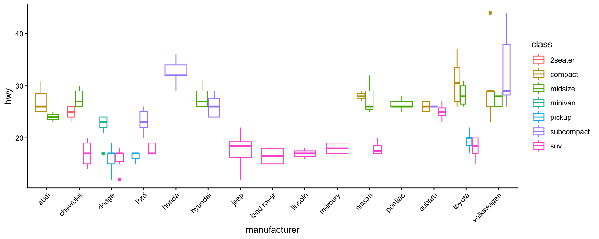
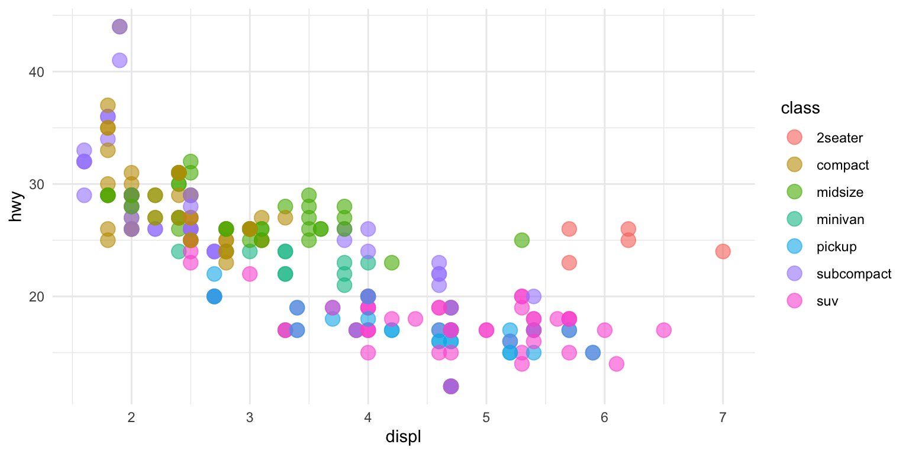
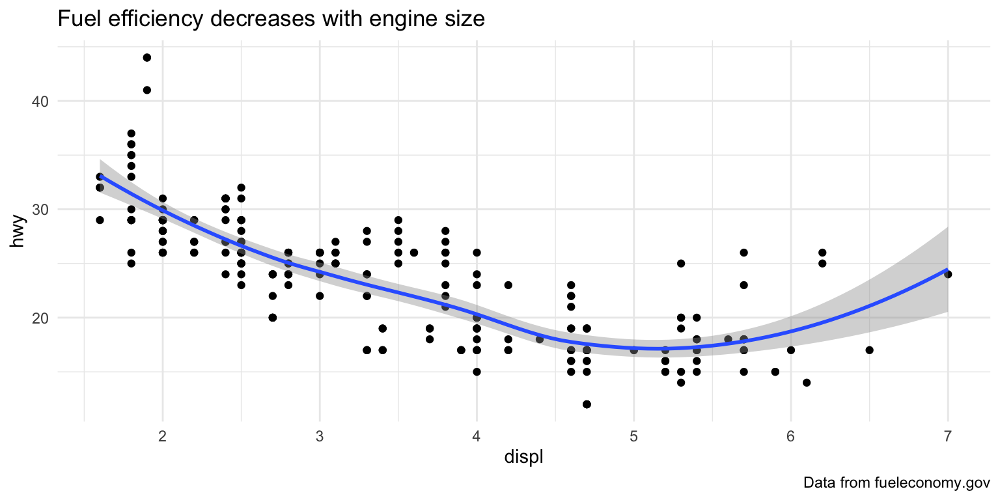
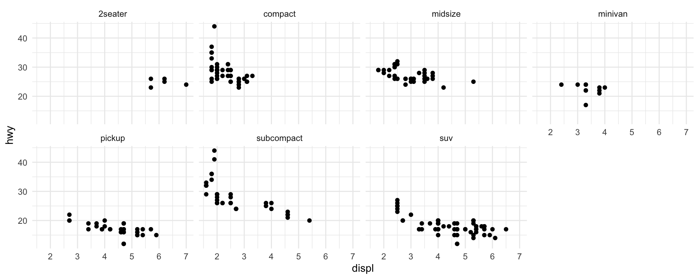
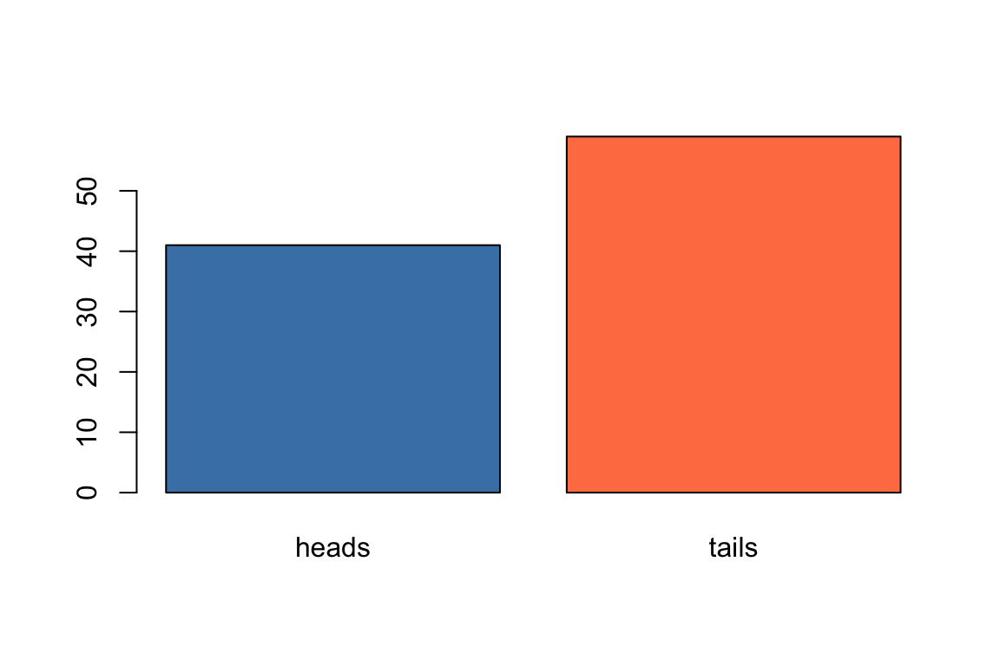
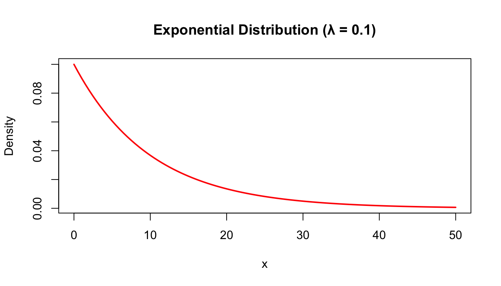

*Italic* or _Italic_
**Bold** or __Bold__Statistics for Bioengineering 2026 - Week 2
Markdown and Reproducible Research
What is Markdown?
- Lightweight markup language for formatting plaintext documents
- Add basic syntax to make elements look different when rendered
- Renders to multiple output formats: PDF, HTML, presentations, websites, books
Formatting Text
Results: Italic, Bold
Block Quotes
> "You know the greatest danger facing us is ourselves,
> an irrational fear of the unknown."
>
> --- Captain James T. Kirk“You know the greatest danger facing us is ourselves, an irrational fear of the unknown.”
— Captain James T. Kirk
What is Quarto?
- Open-source scientific and technical publishing system
- Combines code + text + outputs in a single document
- Successor to R Markdown with expanded capabilities
- Supports R, Python, Julia, and more
Key Benefits
Reproducibility, documentation, multiple output formats
What is LaTeX?
- Pronounced “Lah-tech” or “Lay-tech”
- Document preparation system for high-quality typesetting
- Allows precise mathematical statements
- Can be included directly in Markdown documents
Tip
More info: https://www.latex-project.org
LaTeX Operators and Symbols
Powers, roots, vectors:
a^x, \sqrt[n]{x}, \vec{\jmath}, \tilde{\imath}
\[ \large a^x, \sqrt[n]{x}, \vec{\jmath}, \tilde{\imath}\]
Greek letters:
\alpha, \beta, \gamma, \mu, \sigma, \lambda \[ \large \alpha, \beta, \gamma, \mu, \sigma, \lambda\]
Relational operators: \approx, \neq, \nsim, \leq, \geq \[ \large\approx, \neq, \nsim, \leq, \geq \]
Key Equations in Statistics
Binomial: f(k) = {n \choose k} p\^{k} (1-p)\^{n-k} \[\large f(k) = {n \choose k} p^{k} (1-p)^{n-k}\]
Poisson: Pr(Y=r) = \frac{e^{-\mu}\mu^r}{r!} \[\large Pr(Y=r) = \frac{e^{-\mu}\mu^r}{r!}\]
Normal: f(x) = \frac{1}{\sqrt{2\pi\sigma}} , \mathrm{e}\^{-\frac{(x - \mu)^2}{2\sigma^2}} \[f(x) = \frac{1}{\sqrt{2\pi\sigma}} \, \mathrm{e}^{-\frac{(x - \mu)^2}{2\sigma^2}}\]
Inline vs. Display Equations
Inline: $y=\frac{1}{2}$ renders as \(y=\frac{1}{2}\) within text.
Display: $$y=\frac{1}{2}$$ renders on its own line:
\[y=\frac{1}{2}\]
Code Chunk Options
| Option | Description |
|---|---|
#| echo: true |
Show code in output |
#| eval: false |
Don’t run the code |
#| output: false |
Hide results |
#| warning: false |
Hide warnings |
#| fig-cap: "..." |
Figure caption |
#| fig-width: 8 |
Figure width (inches) |
Week 2: EDA, Probability, and Experimental Design
Week 2 Topics
- Exploratory data analysis
- Data visualization
- Parameters & statistics
- Probability distributions
- Estimates & confidence intervals
- Clinical trials & experimental design
Note
Readings: Chapters 9-15
Exploratory Data Analysis
What is EDA?
- First step in any data analysis
- Understand structure and patterns in your data
- Identify outliers, missing values, errors
- Generate hypotheses for formal testing
Always visualize your data before running statistical tests!
Data Wrangling with Tidyverse
Tidyverse Family of Packages

library(tidyverse)Key dplyr Verbs
| Verb | Purpose | Example |
|---|---|---|
filter() |
Subset rows by values | filter(df, x > 5) |
select() |
Subset columns by name | select(df, col1, col2) |
arrange() |
Reorder rows | arrange(df, x) |
mutate() |
Create new columns | mutate(df, z = x + y) |
summarise() |
Collapse to summary | summarise(df, mean = mean(x)) |
Filter, Arrange, and Select
# Filter rows
filter(flights, month == 11 | month == 12)
# Arrange rows
arrange(flights, year, month, day)
# Select columns
select(flights, year, month, day)
Conditional Operators
| Operator | Meaning |
|---|---|
== |
Equals exactly |
<, <= |
Less than (or equal) |
>, >= |
Greater than (or equal) |
!= |
Not equal to |
! |
NOT operator |
& |
AND operator |
| |
OR operator |
%in% |
Belongs to set |
Mutate and Transmute
# Add new columns based on existing ones
mutate(flights,
gain = arr_delay - dep_delay,
hours = air_time / 60,
gain_per_hour = gain / hours
)
# Using pipes
flights |>
mutate(
gain = arr_delay - dep_delay,
speed = distance / air_time * 60
)Group By and Summarise
# Group by categorical variable
by_day <- group_by(flights, year, month, day)
# Summarise within groups
summarise(by_day, delay = mean(dep_delay, na.rm = TRUE))
Warning
Aggregation functions return NA if any input value is NA. Use na.rm = TRUE to remove missing values.
Other Useful dplyr Functions
| Function | Purpose |
|---|---|
slice() |
Subset rows by position |
pull() |
Extract column as vector |
count() |
Count observations |
distinct() |
Unique observations |
R Exercise: Data Wrangling
Exercise
- Read in
Week1b_Stickle_RNAseq.tsvorknee_injury.csvdataset Selecta subset of categorical variables + quantitative variablesMutateto create square root transformed versionsSummarisemean and SDgrouped bycategories (such as sex, population, treatment)- Write results to a
.csvfile
BREAK
Data Visualization with ggplot2
Introduction to ggplot2
- Part of the
tidyversesuite of packages - GG stands for “Grammar of Graphics”
- Start with
ggplot(), supply dataset and aesthetic mapping withaes() - Add geometry layers with
geom_*()functions
Tip
More info: https://ggplot2.tidyverse.org/
Grammar of Graphics

Boxplots

Boxplots
ggplot(mpg, aes(manufacturer, hwy, colour = class)) +
geom_boxplot() +
theme_classic() +
theme(axis.text.x = element_text(angle = 45, hjust=1))
Scatterplots
ggplot(mpg, aes(displ, hwy, color = class)) +
geom_point(size = 4, alpha = 0.6)
Common ggplot Geoms
| Geom | Purpose | Data Type |
|---|---|---|
geom_point() |
Scatterplots | Two continuous |
geom_line() |
Line plots | Continuous over ordered |
geom_bar() |
Bar charts | Categorical counts |
geom_histogram() |
Histograms | Single continuous |
geom_boxplot() |
Boxplots | Continuous by category |
geom_smooth() |
Trend lines | Two continuous |
Combining Geoms
ggplot(data=mpg, aes(x=displ, y=hwy)) +
geom_point() +
geom_smooth() +
labs(title = "Fuel efficiency decreases with engine size",
caption = "Data from fueleconomy.gov")
Faceting
ggplot(data=mpg) +
geom_point(mapping=aes(x=displ, y=hwy)) +
facet_wrap(~class, nrow=2)
Three-Dimensional Data
set.seed(345)
d <- data.frame(a = rnorm(100, 10, 10), b = rnorm(100, 5, 5))
ggplot(d, aes(x=a, y=b)) +
geom_density2d_filled() +
theme_minimal()
Choosing the Right Plot

R Exercise: Data Visualization
Exercise
- Read in
Week1b_Stickle_RNAseq.tsvorknee_injury.csvdataset - Create
histogramsof data - Create histograms on a
facetedfigure for different levels of a category - Repeat steps 2 and 3 but create
boxplots - Write plots to a
.pdffile
Best Practices in Data Visualization
Principles of Effective Display
“Graphical excellence is that which gives to the viewer the greatest number of ideas in the shortest time with the least ink in the smallest space”
— Edward Tufte
Principles of Effective Display
- Show the data
- Encourage the eye to compare differences
- Represent magnitudes honestly and accurately
- Draw graphical elements clearly, minimizing clutter
- Make displays easy to interpret
“Above All Else Show the Data”

“Maximize the Data to Ink Ratio”

Represent Magnitudes Honestly

How NOT to Make a Figure


“Graphical excellence begins with telling the truth about the data” – Tufte 1983
Parameters and Statistics
Population vs. Sample
| Concept | Population | Sample |
|---|---|---|
| Definition | All individuals | Subset of population |
| Parameters | μ (mean), σ (SD) | x̄ (mean), s (SD) |
| Goal | What we want to know | What we can measure |
Important
We use sample statistics to estimate population parameters
Accuracy vs. Precision

- Accuracy: closeness to true value
- Precision: closeness of repeated estimates to each other
- Replication quantifies variation
- Randomization avoids bias
Stochastic Processes in Statistics
- We often want to know truths about the world, but can only estimate them
- Uncertainty in those estimates is a given
- Statistics is largely about quantifying and managing that uncertainty
- Random variables are products of stochastic processes
- Different stochastic processes will generate different probability distributions
Random Variables and Probability
- Probability is the expression of belief in some future outcome
- A random variable can take on different values with different probabilities
- The sample space is the universe of all possible values
- Sample space represented by:
- Probability mass distribution (discrete)
- Probability density function (continuous)
- Probabilities of a sample space always sum to 1.0
Two Interpretations of Probability
Frequency interpretation:
“Probabilities are mathematically convenient approximations to long run relative frequencies.”
Subjective (Bayesian) interpretation:
“A probability statement expresses the opinion of some individual regarding how certain an event is to occur.”
Probability Rules
‘And’ rule (multiplication): \[Pr(X \text{ and } Y) = Pr(X) \times Pr(Y)\]
‘Or’ rule (addition): \[Pr(X \text{ or } Y) = Pr(X) + Pr(Y)\]
Note
The ‘and’ rule assumes independent events. For non-independent events, we need conditional probabilities.
Joint and Conditional Probability
Joint probability (independent events): \[Pr(X,Y) = Pr(X) \times Pr(Y)\]
Conditional probability (independent): \[Pr(Y|X) = Pr(Y) \text{ and } Pr(X|Y) = Pr(X)\]
Conditional probability (non-independent): \[Pr(Y|X) \neq Pr(Y) \text{ and } Pr(X|Y) \neq Pr(X)\]
Likelihood vs. Probability
- Probability: proportion of times an event would occur over many trials
- Likelihood: conditional probability of a parameter value given data
\[L[\text{parameter}|\text{data}] = Pr[\text{data}|\text{parameter}]\]
- Maximum likelihood: highest value of the likelihood function
- Bayesian estimate: uses prior distribution to update posterior distribution
Moments of Distributions
1st moment (mean/expectation): \[E[X] = \sum_{\text{all x}}xP(X=x) = \mu\]
2nd moment (variance): \[Var(X) = E[(X-\mu)^2] = \sigma^2\]
Standard deviation: \[SD = \sqrt{\sigma^2} = \sigma\]
Higher moments include skewness (3rd) and kurtosis (4th).
Discrete Probability Distributions
Bernoulli Distribution
Describes the expected outcome of a single event with probability \(p\).
Example: Flipping a fair coin once
\[Pr(X=\text{Head}) = \frac{1}{2} = 0.5 = p\]
\[Pr(X=\text{Tails}) = \frac{1}{2} = 0.5 = 1 - p = q\]
Probabilities always sum to 1: \(p + q = 1\)
Let’s Simulate Coin Flips
coin <- c("heads", "tails")
flips <- sample(coin, prob = c(0.5, 0.5), size = 100, replace = TRUE)
barplot(table(flips), col = c("steelblue", "coral"))
Binomial Distribution
Results from combining several independent Bernoulli events.
\[\large f(k) = {n \choose k} p^{k} (1-p)^{n-k}\]
Where:
- \(n\) = total number of trials
- \(k\) = number of successes
- \(p\) = probability of success
Binomial Distribution

Testing Binomial Distributions
# Probability of exactly 5 successes in 10 trials
dbinom(x = 5, size = 10, prob = 0.5)[1] 0.2460938# Plot distribution
plot(0:10, dbinom(x = 0:10, size = 10, prob = 0.5),
type = "h", lwd = 3, col = "steelblue",
xlab = "Number of Successes", ylab = "Probability")
Poisson Distribution
- For discrete counts (e.g., snails per plot, neuron firings per second).
\[Pr(Y=r) = \frac{e^{-\lambda}\lambda^r}{r!}\]
The Poisson is a single-parameter distribution: \(\mu = \sigma^2 = \lambda\)
Variables with variance > mean are called “overdispersed” (common in RNA-seq data).
Poisson Distribution Examples


Testing Poisson Distributions
# Probability of 2 counts given lambda = 1
dpois(x = 2, lambda = 1)[1] 0.1839397# Plot distribution
plot(0:15, dpois(x = 0:15, lambda = 3),
type = "h", lwd = 3, col = "darkgreen",
xlab = "Count", ylab = "Probability")
Geometric Distribution
Probability of observing \(k\) trials before the first success:
\[P(X=k)=(1-p)^{k-1}p\]
- Mean = \(\frac{1}{p}\)
- Variance = \(\frac{(1-p)}{p^2}\)
Example: If extinction probability is 0.1 per year, expected time to extinction?
Negative Binomial Distribution
Probability of the \(r^{th}\) success on the \(k^{th}\) trial:
\[P(X=k)=\binom{k-1}{r-1}p^{r}(1-p)^{k-r}\]
- Mean = \(\frac{r}{p}\)
- Variance = \(\frac{r(1-p)}{p^2}\)
Continuous Probability Distributions
Continuous Probability Distributions
\[P(a\leq X \leq b) = \int_{a}^{b} f(x) dx\]
The indefinite integral sums to one:
\[\int_{-\infty}^{\infty} f(x) dx = 1\]
Expectation: \[E[X] = \int_{-\infty}^{\infty} xf(x) dx\]
Uniform Distribution
All outcomes equally probable.
\[E[X] = \frac{(a+b)}{2}\]
x <- seq(0, 10, 0.1)
plot(x, dunif(x, 0, 10), type = "l", lwd = 2, col = "purple",
ylab = "Density", main = "Uniform Distribution (0, 10)")
Exponential Distribution
\[f(x)=\lambda e^{-\lambda x}\]
- \(E[X] = \frac{1}{\lambda}\)
- \(Var(X) = \frac{1}{\lambda^2}\)
Example: If λ equals the instantaneous death rate, the lifespan follows an exponential distribution.
Exponential Distribution
x <- seq(0, 50, 0.5)
plot(x, dexp(x, rate = 0.1), type = "l", lwd = 2, col = "red",
ylab = "Density", main = "Exponential Distribution (λ = 0.1)")
Gamma Distribution
Waiting time until the \(r^{th}\) event at rate \(\lambda\):
\[f(x) = \frac{\lambda^r x^{r-1} e^{-\lambda x}}{(r-1)!}\]
- Mean = \(\frac{r}{\lambda}\)
- Variance = \(\frac{r}{\lambda^2}\)
Example: Time until 1000 DNA strands synthesized at rate 1/ms.
Normal (Gaussian) Distribution
\[f(x) = \frac{1}{\sqrt{2\pi\sigma^2}} \, \mathrm{e}^{-\frac{(x - \mu)^2}{2\sigma^2}}\]
Notation: \(v \sim \mathcal{N}(\mu, \sigma^2)\)

Why is the Normal Distribution Special?

Central Limit Theorem Connection

Z-Scores
Standardize variables to mean = 0, SD = 1:
\[\huge z_i = \frac{(x_i - \bar{x})}{s}\]
This is the standard normal distribution.
Distribution Functions in R
| Prefix | Function | Example |
|---|---|---|
d |
Probability density/mass | dnorm(0, 0, 1) |
p |
Cumulative distribution | pnorm(1.96, 0, 1) |
q |
Quantile function | qnorm(0.975, 0, 1) |
r |
Random number generator | rnorm(100, 0, 1) |
Works for: binom, pois, exp, norm, geom, nbinom, unif, gamma
Estimates and Confidence Intervals
Parameter Estimation
- Estimation infers population parameters from sample data
- Sample estimates rarely equal population parameters exactly
- Sampling distribution: all values we might obtain from samples
- Standard error: standard deviation of sampling distribution
Important
NO ESTIMATE IS USEFUL WITHOUT A STANDARD ERROR!
Estimation Approaches
| Approach | Description |
|---|---|
| Parametric | Assumes specific distributions |
| Resampling | Bootstrap/randomization for empirical distributions |
| OLS | Ordinary Least Squares optimization |
| Maximum Likelihood | Model-based estimates with confidence |
| Bayesian | Incorporates prior information |
The Central Limit Theorem
For most data, we can’t determine sampling distributions empirically.
The CLT tells us that the sampling distribution of the mean approaches normal as sample size increases, regardless of the underlying distribution.
Standard Error of the Mean
\[\huge \sigma_{\bar{x}} \approx s_{\bar{x}} = \frac{s}{\sqrt{n}}\]
Note
- SEM is NOT the standard deviation of the original distribution
- SEM decreases as sample size increases
Calculating SEM
set.seed(32)
true_pop <- rnorm(n = 1000, mean = 2, sd = 5)
# Small sample
samps_5 <- replicate(n = 50, sample(true_pop, size = 5))
sem_5 <- sd(apply(samps_5, 2, mean)) / sqrt(50)
# Larger sample
samps_50 <- replicate(n = 50, sample(true_pop, size = 50))
sem_50 <- sd(apply(samps_50, 2, mean)) / sqrt(50)
cat("SEM (n=5):", round(sem_5, 4), "\nSEM (n=50):", round(sem_50, 4))SEM (n=5): 0.2647
SEM (n=50): 0.0828Confidence Intervals
A confidence interval is a range of values about a parameter estimate such that we are X% certain the true population parameter lies within.
# 95% CI using t.test
sample_data <- rnorm(30, mean = 10, sd = 2)
t.test(sample_data)$conf.int[1] 9.177721 10.707722
attr(,"conf.level")
[1] 0.95Coefficient of Variation
To compare standard deviations across populations with different means:
\[CV = \frac{s}{\bar{x}} \times 100\%\]
BREAK
Experimental Design Principles
What is an Experimental Study?
- In an experimental study the researcher assigns treatments to units
- In an observational study nature does the assigning
- The crucial advantage of experiments: random assignment of treatments
- Randomization minimizes the influence of confounding variables
- Allows us to infer cause and effect
Clinical Trials
- Gold standard of experimental designs
- Two or more treatments assigned to human subjects
- Design refined because cost of mistakes is high
Key components:
- Simultaneous control group
- Randomization
- Blinding
- Replication
- Balance
- Blocking
Clinical Trial Example

Simultaneous Control Group
- Placebo or currently accepted treatment
- Control subjects should be perturbed similarly to treated subjects
- “Sham operation” example in surgical studies
Randomization
- Breaks association between confounding variables and treatment
- Ensures variation from confounding variables is similar across groups
Types:
- Completely randomized design
- Randomized block design
- Matched pair design
Random Sampling Approaches
- Simple random sample - every sample has equal probability
- Stratified sample - divided into groups, then random sample from each
- Cluster sample - random sample of naturally occurring groups
- Multistage sampling - combines the above approaches
- Systematic sample - predetermined pattern (e.g., every 20th person)
Blinding
- Single-blind: Subjects unaware of treatment
- Double-blind: Both subjects and researchers unaware
Important
Studies without double-blinding exaggerate treatment effects by 16% on average (Jüni et al. 2001)
Replication and Balance
Replication:
- Assignment of each treatment to multiple independent units
- Larger samples = smaller standard errors, more power
Balance:
- Equal sample sizes across treatments
- Minimizes standard error

Pseudoreplication

Blocking
- Grouping of experimental units with similar properties
- Treatments randomly assigned within blocks
- Reduces variation from differences between blocks

Paired Designs